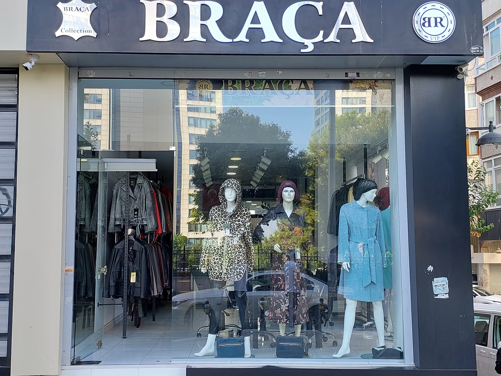

X yılında kurulan Braça, deri mont, kürk ve ceket sektöründe kaliteli ve zarif ürünleriyle tanınan bir markadır. Kendi atölyemizde titizlikle gerçekleştirdiğimiz üretim süreci, bize her aşamada tam kontrol ve yüksek standartlarda kalite sunma imkanı sağlar.Yıllardır süregelen tecrübemiz ve sektördeki derin bilgi birikimimizle, müşterilerimize hem zarif hem de dayanıklı giysiler sunma misyonunu taşıyoruz.

Braça olarak, moda ve konforu bir araya getirerek, her bir ürünümüzde şıklığı ve dayanıklılığı ön planda tutuyoruz. En iyi malzemeleri kullanarak, özgün ve kaliteli tasarımlar yaratıyoruz. Kendi atölyemizde yapılan üretim, her ürüne özel bir dokunuş katarken, müşterilerimize kişiselleştirilmiş ve yüksek kalitede ürünler sunmamıza olanak tanır.
Müşteri memnuniyetini en önemli önceliğimiz olarak kabul ediyoruz. Size özel tasarımlar ve kişiye özel hizmetlerle, stilinize uygun en iyi seçenekleri sunmak için sürekli olarak kendimizi geliştiriyoruz. Braça’nın deneyimli ekibi, her aşamada kaliteyi ve estetiği gözeterek, size mükemmel bir deneyim yaşatmayı taahhüt eder.
Modanın ve işçiliğin birleştiği noktada, Braça olarak sektördeki öncü rolümüzü sürdürerek, her mevsim şık ve rahat hissettirecek ürünlerle sizleri buluşturmak için çalışıyoruz.


.png )